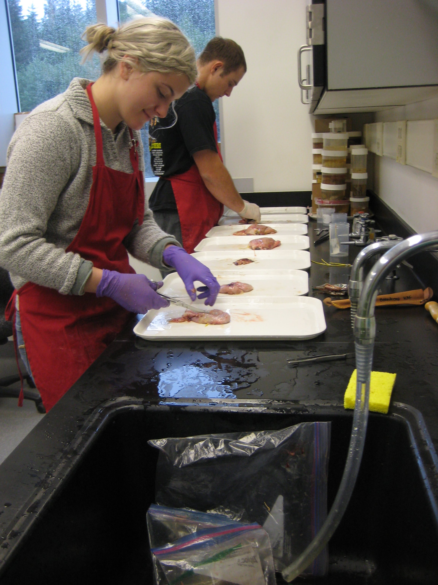
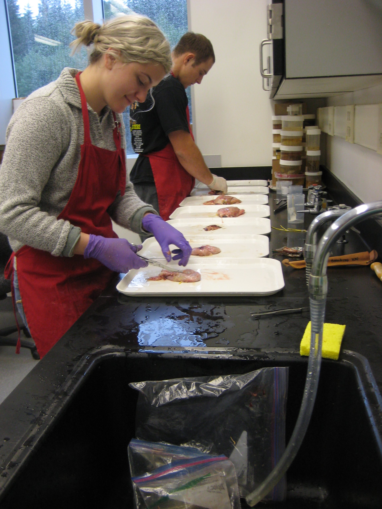

The following people assisted with one or more projects that I've led (via collecting field and/or lab data, conducting exploratory analyses, or facilitating outreach programs). I have benefitted from both mentoring and learning from these individuals over the years. Resulting publications and other professional successes would not have been possible without their time, effort, and...most importantly, enthusiasm! Please also check out the photo gallery, which highlights some of our collaborative work.
If you're interested in professional development opportunities or collaborating on a project, get in touch — I'd love to hear from you!
 

Alex Aines (2013)
Daniel Anaya (2013)
Joshua Antus (2009)
Karen Askeland (2010)
Madison Bargas (2017-18)
Kaitlyn Beck (2014)
Ellen Bjork (2008)
Sara Briley (2008)
Katie Brown (2016)
Adam Chorazyczewski (2014)
Zoe Dagan (2009-10)
Helena Delgado-Nordmann (2016)
Caitlin Doles (2013)
Danielle Duncan (2013)
Alex Feck (2009)
Amanda Gile (2015)
Chris Giordano (2014)
Hallie Heath (2013-14)
Ashley Hedger (2009)
Elizabeth Hetherington (2009)
Clarice Homer (2018)
Chanelle Hope (2010)
Georgina Hunt (2015)
Zachary Johanson (2016)
Aiden Kamber (2017)
Laura Knopp (2009)
Kristin Kuhn (2008-09)
Janelle Li (2020-21)
Sawyer Link (2016)
Serena Lomonico (2014)
Marianne Mairz (2010)
Rhiannon McCollough (2013)
Paul Muehlenbeck (2012)
Robert Rand (2011-12)
Samantha Robinson (2011)
Kristina Ros (2010)
Peachyapa Saengcharoentrakul (2020-21)
Marty Schmidt (2012)
Elizabeth Schurig (2013)
Sima Saadat (2010-11)
Nikka Siababa (2014)
Aaron Sloan (2014)
Emily Stollmeyer (2013)
Harmony Wayner (2016-17)
Dani Weir (2009)
Countless volunteers, fishers, and resource managers have also contributed to my understanding of groundfish dynamics in the California Current and in Alaskan waters. I am forever indebted to these wonderful people, many of whom have become my home away from home. Financial support for my various projects can be found in my CV, under 'Grants and Fellowships'.